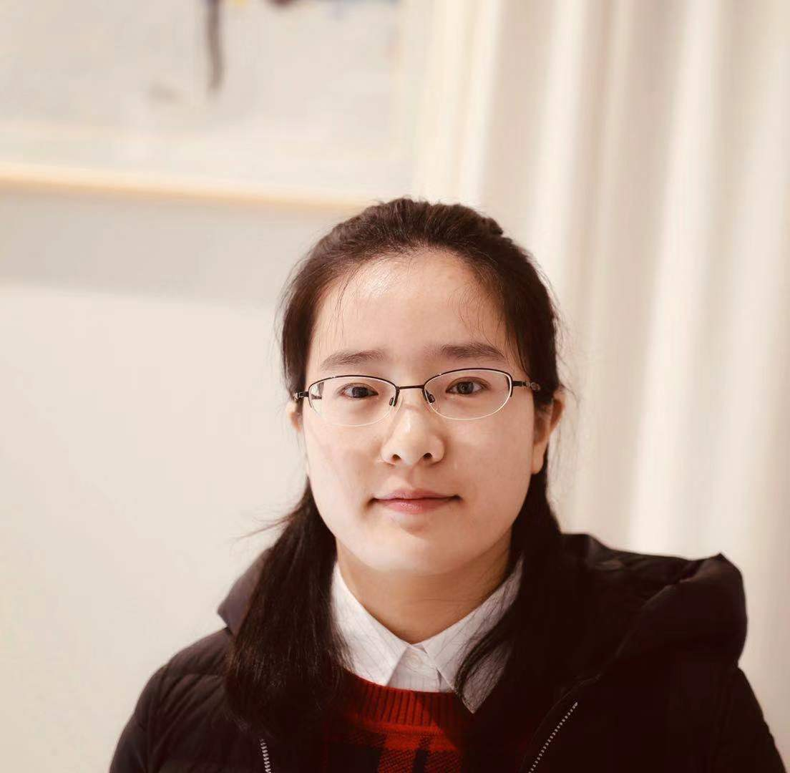

|

|

NewsOpening: I am looking for RA/Postdoc to work on medical image analysis, computer vision and machine learning. Please feel free to drop me an email if interested. |
Short BioI am now an assistant research fellow with the Research Center for Artificial Intelligence, Peng Cheng Laboratory . Before that, I was a post-doc at the School of Computer Science and Technology, University of Chinese Academy of Sciences (UCAS), supervised by Prof. Qingming Huang. I obtained my Ph.D. degree in UCAS, supervised by Prof. Qingming Huang and Dr. Shuhui Wang in December 2017. I received the B.S. degree in mathematics and applied mathematics and the M.S. degree in operational research and cybernetics from Zhengzhou University, in 2009 and 2012, respectively. |
Research InterestsMultimodal Learning, Computer Vision, Medical Image Analysis, Machine Learning. Recently, I focus on multimodal learning for medical scenarios, for improving lesion detection, abnormal structure segmentation and quantification, cancer diagnosis and therapy. |
Publications Learning Feature Representation and Partial Correlation for Multimodal Multi-Labeled Data. Harmonized Multimodal Learning with Gaussian Process Latent Variable Models.
Learning Fragment Self-Attention Embeddings for Image-Text Matching.
Online Asymmetric Metric Learning with Multi-Layer Similarity Aggregation for Cross-Modal Retrieval.
Multimodal Similarity Gaussian Process Latent Variable Model.
Multimodal Gaussian Process Latent Variable Models with Harmonization.
Similarity Gaussian Process Latent Variable Model for Multi-Modal Data Analysis.
|